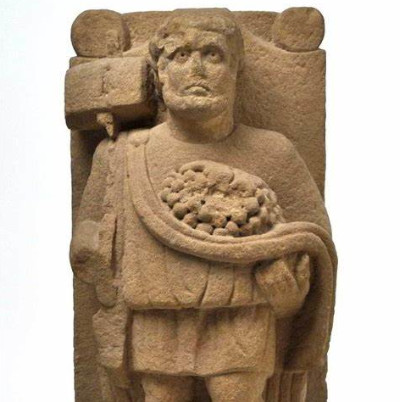
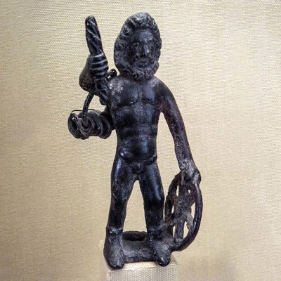
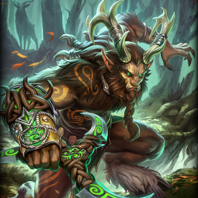
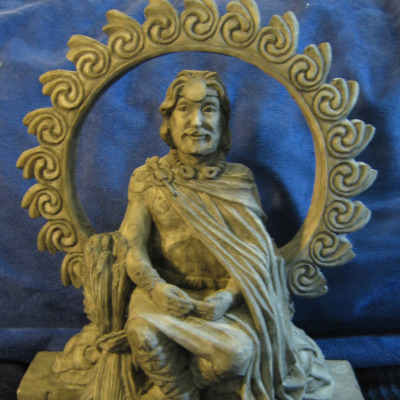
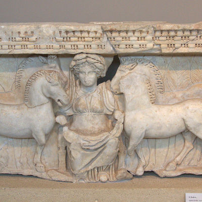
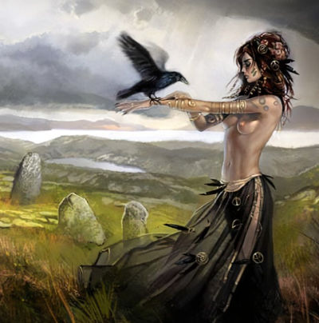
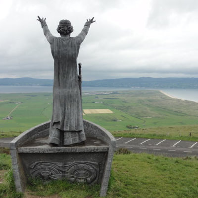

Mitologia celta
A mitologia celta reúne um conjunto de deuses e histórias de povos que viveram por toda a Europa antes da expansão do Império Romano.
Apesar de ser classificada como uma coisa só, a mitologia celta representa um conjunto de crenças de povos primitivos da Europa. Isso porque os celtas ocuparam um território extenso, da Ásia Menor até a Europa Ocidental, incluindo as ilhas da Grã-Bretanha.
De forma geral, a mitologia pode ser dividida em três grandes grupos principais: mitologia irlandesa (da Irlanda), mitologia galesa (do País de Gales) e mitologia galo-romano (da região da Gália, atual França).
Os principais relatos da mitologia celta conhecidos hoje vêm de textos de monges cristãos convertidos da religião celta, bem como de escritores romanos.
Os celtas
O povo celta viveu em praticamente toda a Europa, partindo originalmente da Alemanha e se espalhando para regiões de Hungria, Grécia e Ásia Menor. Apesar da classificação única, formavam na verdade várias tribos rivais. A própria mitologia de cada um desses grupos envolvia o culto a divindades diferentes, com algumas coincidências.
tualmente, quando se fala em mitologia celta a principal associação é com a região do Reino Unido, principalmente da Irlanda. Durante a Idade do Ferro, os povos dessa região viviam em pequenas aldeias lideradas por chefes guerreiros.
Além disso, foi esse povo que ajudou a preservar a história celta, a partir dos monges convertidos ao cristianismo. Dessa maneira, foi possível registrar parte da complexa mitologia em textos medievais que ajudaram a compreender parte da cultura pré-romana.
Principais deuses da Mitologia celta continental
Sucellus
Considerado deus da agricultura, era representado como um homem velho acompanhado de seu martelo ou bastão, utilizados na fertilidade da terra. Além disso, também podia aparecer vestindo uma coroa de folhas, ao lado de um cão de caça.
Taranis
O deus Taranis pode ser associado a Zeus, na mitologia grega. Isso porque também era um deus guerreiro associado ao trovão, representado com uma barba imponente. Taranis também representava a dualidade da vida, por simbolizar o caos das tempestades e a bênção da vida oferecida pelas chuvas.
Cernunnos
Cernunnos é um dos deuses mais antigos da mitologia celta. É um deus poderoso que pode controlar os animais, além de conseguir se transformar neles. Sua principal característica são os chifres de cervo, que representam sua sabedoria.
Dea Matrona
Dea Matrona significa Deusa Mãe, ou seja, ela representava a maternidade e a fertilidade. No entanto, em algumas retratações aparece como três mulheres diferentes, e não apenas uma.
Belenus
Também chamado de Bel, é o deus do fogo e do Sol. Além disso, também era cultuado como deus da agricultura e da cura.
Epona
Apesar de ser uma deusa típica da mitologia celta, Epona também foi muito cultuada por povos da Roma Antiga. Ela era deusa da fertilidade e do vigor, além de protetora dos cavalos e outros equinos.
Dagda
É um deus gigante, com poderes de amor, sabedoria e fertilidade. Por conta de seu tamanho exagerado, também tem uma fome acima da média, o que significa que precisa comer com frequência. As lendas diziam que seu caldeirão gigante permitia preparar qualquer alimento, inclusive para compartilhar com outras pessoas, o que o transformou no deus da generosidade e da abundância.
Lugh
Lugh era um deus artesão, ligado a prática de ferreiros e outros ofícios. A partir da sua conexão com a produção de armas e outros equipamentos, também foi cultuado como deus guerreiro e deus do fogo.
Morrigan
Seu nome significa Deusa Rainha, mas era cultuada principalmente como deusa da morte e da guerra. De acordo com a mitologia celta, ela acumulava a sabedoria a partir de sua transformação em corvo, que a ajudava a acompanhar batalhas. Por outro lado, a presença da ave também indicava sinal de aproximação da morte.
Brigit
Filha de Dagda, Brigit era cultuada principalmente como deusa da cura, da fertilidade e da arte, mas também foi ligada a animais de fazenda. Sendo assim, era comum que sua adoração estivesse ligada, por exemplo, a gados criados em diferentes aldeias.
Manannán Mac Lir
Manannán Mac Lir era deus da magia e dos mares. Seu barco mágico, no entanto, era puxado por um cavalo (de nome Aonharr, ou espuma de água). Dessa maneira, ele conseguia viajar em alta velocidade pelas águas, sendo capaz de estar presente em lugares distantes com agilidade.